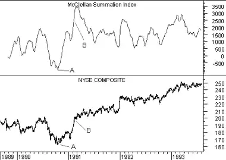

McClellan Summation Index
Overview
The McClellan Summation Index is a market breath indicator based on the McClellan Oscillator.
The McClellan Summation Index was developed by Sherman and Marian McClellan. Extensive coverage of the index is provided in their book Patterns for Profit.
Interpretation
The McClellan Summation Index is a long-term version of the McClellan Oscillator. Its interpretation is similar to that of the McClellan Oscillator except that it is more suited to major trend reversals.
As explained in the Calculation section, there are two methods to calculate the Summation Index. The two calculation methods create indicators with identical appearances, but their numeric values differ. These interpretational comments refer to the "suggested" calculation method explained in the Calculation section.
McClellan suggests the following rules for use with the Summation Index:
- Look for major bottoms when the Summation Index falls below -1,300.
- Look for major tops to occur when a divergence (page 29) with the market occurs above a Summation Index level of +1,600.
- The beginning of a significant bull market is indicated when the Summation Index crosses above +1,900 after moving upward more than 3,600 points from its prior low (e.g., the index moves from -1,600 to +2,000).
Example
The following chart shows the McClellan Summation Index and the New York Stock Exchange Index.
 At the point labeled "A," the Summation Index fell below -1,300. This signified a major bottom. The point labeled "B" indicated the beginning of a significant bull market, because the Summation Index rose above +1,900 after moving upward more than 3,600 points from its prior low.Calculation
The McClellan Summation Index can be calculated using two different methods. This first method is the suggested method promoted by Mr. McClellan. It subtracts 10% (approximately 19-day) and 5% (approximately 39-day) exponential moving averages of advancing minus declining issues from the McClellan Oscillator.
Where:

The second method is to calculate a cumulative sum of the McClellan Oscillator values: